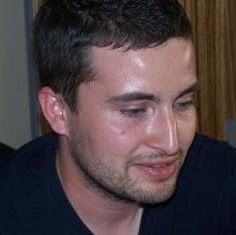

Speakers
-
Etienne Juliot
OBEO
Model-Driven SoftWare Development 2.0
-
Bedir TEKİNERDOĞAN
BILKENT UNIVERSITY
Model-Driven Design for Mapping Parallel Applications to Parallel Computing Platforms
-

Vahid GAROUSI
ATILIM UNIVERSITY
UML-Driven Software Performance Engineering
-

Fevzi BELLİ
Paderborn University and Izmir Institute of Technology
A Holistic Approach to Modeling, Analysis and Testing
-
Ali Hikmet DOĞRU
MIDDLE EAST TECHNICAL UNIVERSITY
End User Development: An Experience in Bridging Research with Industry
-
Hasan SÖZER
ÖZYEĞİN UNIVERSITY
Improving Models for Model-based Testing using Exploratory Testing
-
Cemal YILMAZ
SABANCI UNIVERSITY
Combinatorial Interaction Testing
-

Ferhat ERATA
UNIT Information Technologies R&D Ltd.
Model-Driven Development of Composite Content Applications
-

Moharram CHALLENGER
EGE UNIVERSITY
Model-driven development of Multi-agent Systems